전기공사기사 (2022-04-24 기출문제)
1과목: 전기응용 및 공사재료
1. FET에 핀치 오프(pinch off)전압이란?
- 채널 폭이 막힌 때의 게이트 역방향 전압
- FET에서 애벌런치 전압
- 드레인과 소스 사이의 최대 전압
- 채널 폭이 최대로 되는 게이트의 역방향 전압
(정답률: 알수없음)

2. 비금속 발열체에 대한 설명으로 틀린 것은?
- 탄화규소 발열체는 카보런덤을 주성분으로 한 발열체이다.
- 탄소질 발열체에는 인조 흑연을 가공하여 사용하는 것이 있다.
- 규화 몰리브덴 발열체는 고온용의 발열체로써 칸탈선이라고도 한다.
- 염욕 발열체는 높은 도전성을 가지는 고체 발열체이다.
(정답률: 알수없음)
3. 직류 전동기의 속도 제어법이 아닌 것은?
- 극수변환
- 전압제어
- 저항제어
- 계자제어
(정답률: 알수없음)
4. 천장면을 여러 형태의 사각, 삼각 등으로 구멍을 내어 다양한 형태의 매입기구를 취부하여 실내의 단조로움을 피하는 조명 방식은?
- pin hole light
- coffer light
- line light
- cornis light
(정답률: 알수없음)
5. 형태가 복잡하게 생긴 금속 제품을 균일하게 가열하는데 가장 적합한 전기로는?
- 염욕로
- 흑연화로
- 카보런덤로
- 페로알로이로
(정답률: 알수없음)
6. 온도 20℃에서 저항 20Ω인 구리선이 온도 80℃로 변화하였을 때, 구리선의 저항(Ω)은 약 얼마인가? (단, 온도 t(℃)에서 구리 저항의 온도 계수는
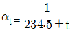
이다.)- 15.36
- 24.72
- 35.62
- 43.85
(정답률: 알수없음)
7. 전식을 방지하기 위한 전철 측에서의 방지 대책 중 틀린 것은?
- 변전소의 간격을 축소한다.
- 레일본드를 설치한다.
- 대지에 대한 레일의 절연 저항을 적게 한다.
- 귀선의 극성을 전기적으로 바꾸어 준다.
(정답률: 알수없음)
8. 엘리베이터에 사용되는 전동기의 특성이 아닌 것은?
- 소음이 적어야 한다.
- 기동 토크가 적어야 한다.
- 회전부분의 관성 모멘트는 적어야 한다.
- 가속도의 변화비율이 일정값이 되도록 선택한다.
(정답률: 알수없음)
9. 식염전해에 대한 설명으로 틀린 것은?
- 제조법에는 격막법과 수은법이 있다.
- 염소, 수소와 수산화나트륨의 제조 방법에 사용된다.
- 수은법에서 전해조의 애노드는 흑연, 캐소드는 수은을 사용한다.
- 격막법은 수은법보다 전류 밀도가 크고 생산성이 높다.
(정답률: 알수없음)
10. 휘도가 균일한 원통광원의 축 중앙 수직방향의 광도가 250cd 이다. 전 광속(lm)은 약 얼마인가?
- 80
- 785
- 2467
- 3142
(정답률: 알수없음)
11. 방전등에 속하지 않는 것은?
- 할로겐등
- 형광수은등
- 고압나트륨등
- 메탈할라이드등
(정답률: 알수없음)
12. 과전류차단기로 시설하는 퓨즈 중 고압전로에 사용하는 포장 퓨즈는 정격 전류의 몇 배의 전류에서 2시간 이내에 용단되지 않아야 하는가? (단, 퓨즈 이외의 과전류 차단기와 조합하여 하나의 과전류 차단기로 사용하는 것은 제외한다.)
- 1.1
- 1.3
- 1.5
- 1.7
(정답률: 알수없음)
13. 나트륨램프에 대한 설명 중 틀린 것은?
- KS C 7610에 따른 기호 NX는 저압 나트륨램프를 표시하는 기호이다.
- 등황색의 단일 광색으로 색수치가 적다.
- 색온도는 5000~6000K 정도이다.
- 도로, 터널, 항만표지 등에 이용한다.
(정답률: 알수없음)
14. 콘크리트 전주의 접지선 인출구는 지지점 표시선으로부터 몇 mm 지점에 있는가?
- 600
- 800
- 1000
- 1200
(정답률: 알수없음)
15. 다음 중 경완철의 표준규격(길이)이 아닌 것은?
- 1000mm
- 1400mm
- 1800mm
- 2400mm
(정답률: 알수없음)
16. KS C 3824에 따른 전차선로용 180mm 현수애자 하부의 핀 모양이 아닌 것은?
- 훅(소)
- 아이(평행)
- 크레비스
- ㄷ형
(정답률: 알수없음)
17. 암거에 시설하는 지중전선에 대한 설명으로 틀린 것은? (단, 암거 내에 자동소화설비가 시설되지 않은 경우이다.)
- 불연성이 있는 연소방지도료로 지중전선을 피복한 전선은 사용이 가능하다.
- 자소성이 있는 난연성 피복이 된 지중전선은 사용이 가능하다.
- 자소성이 있는 난연성의 관에 지중전선을 넣어 시설하는 것은 불가능하다.
- 자소성이 있는 난연성의 연소방지테이프로 지중전선을 피복한 전선은 사용이 가능하다.
(정답률: 알수없음)
18. KS C 4506에 따른 COS(컷아웃스위치)의 정격전류(A)가 아닌 것은?
- 15
- 30
- 45
- 60
(정답률: 알수없음)
19. 연축전지의 음극에 쓰이는 재료는?
- 납
- 카드뮴
- 철
- 산화니켈
(정답률: 알수없음)
20. 문자 기호 중 계기류에 속하지 않는 것은?
- ZCT
- A
- W
- WHM
(정답률: 알수없음)
2과목: 전력공학
21. 직접접지방식에 대한 설명으로 틀린 것은?
- 1선 지락 사고시 건전상의 대지 전압이 거의 상승하지 않는다.
- 계통의 절연수준이 낮아지므로 경제적이다.
- 변압기의 단절연이 가능하다.
- 보호계전기가 신속히 동작하므로 과도안정도가 좋다.
(정답률: 알수없음)
22. 전력계통의 안정도에서 안정도의 종류에 해당하지 않는 것은?
- 정태 안정도
- 상태 안정도
- 과도 안정도
- 동태 안정도
(정답률: 알수없음)
23. 수차의 캐비테이션 방지책으로 틀린 것은?
- 흡출수두를 증대시킨다.
- 과부하 운전을 가능한 한 피한다.
- 수차의 비속도를 너무 크게 잡지 않는다.
- 침식에 강한 금속재료로 러너를 제작한다.
(정답률: 알수없음)
24. 보호계전기의 반한시ㆍ정한시 특성은?
- 동작전류가 커질수록 동작시간이 짧게 되는 특성
- 최소 동작전류 이상의 전류가 흐르면 즉시 동작하는 특성
- 동작전류의 크기에 관계없이 일정한 시간에 동작하는 특성
- 동작전류가 커질수록 동작시간이 짧아지며, 어떤 전류 이상이 되면 동작전류의 크기에 관계없이 일정한 시간에서 동작하는 특성
(정답률: 알수없음)
25. 부하전류가 흐르는 전로는 개폐할 수 없으나 기기의 점검이나 수리를 위하여 회로를 분리하거나, 계통의 접속을 바꾸는데 사용하는 것은?
- 차단기
- 단로기
- 전력용 퓨즈
- 부하 개폐기
(정답률: 알수없음)
26. 밸런서의 설치가 가장 필요한 배전방식은?
- 단상 2선식
- 단상 3선식
- 3상 3선식
- 3상 4선식
(정답률: 알수없음)
27. 직렬콘덴서를 선로에 삽입할 때의 이점이 아닌 것은?
- 선로의 인덕턴스를 보상한다.
- 수전단의 전압강하를 줄인다.
- 정태안정도를 증가한다.
- 송전단의 역률을 개선한다.
(정답률: 알수없음)
28. 배기가스의 여열을 이용해서 보일러에 공급되는 급수를 예열함으로써 연료 소비량을 줄이거나 증발량을 증가시키기 위해서 설치하는 여열회수 장치는?
- 과열기
- 공기 예열기
- 절탄기
- 재열기
(정답률: 알수없음)
29. 저압뱅킹 배전방식에서 캐스케이딩현상을 방지하기 위하여 인접 변압기를 연락하는 저압선의 중간에 설치하는 것으로 알맞은 것은?
- 구분퓨즈
- 리클로저
- 섹셔널라이저
- 구분개폐기
(정답률: 알수없음)
30. 전력용 콘덴서에 비해 동기조상기의 이점으로 옳은 것은?
- 소음이 적다.
- 진상전류 이외에 지상전류를 취할 수 있다.
- 전력손실이 적다.
- 유지보수가 쉽다.
(정답률: 알수없음)
31. 전선의 굵기가 균일하고 부하가 균등하게 분산되어 있는 배전선로의 전력손실은 전체 부하가 선로 말단에 집중되어 있는 경우에 비하여 어느 정도가 되는가?
- 1/2
- 1/3
- 2/3
- 3/4
(정답률: 알수없음)
32. 피뢰기의 충격방전 개시전압은 무엇으로 표시하는가?
- 직류전압의 크기
- 충격파의 평균치
- 충격파의 최대치
- 충격파의 실효치
(정답률: 알수없음)
33. 그림과 같이 지지점 A, B, C에는 고저차가 없으며, 경간 AB와 BC 사이에 전선이 가설되어 그 이도가 각각 12cm 이다. 지지점 B에서 전선이 떨어져 전선의 이도가 D로 되었다면 D의 길이(cm)는? (단, 지지점 B는 A와 C의 중점이며 지지점 B에서 전선이 떨어지기 전, 후의 길이는 같다.)
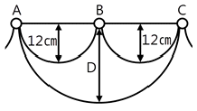
- 17
- 24
- 30
- 36
(정답률: 알수없음)
34. 정전용량 0.01μF/km, 길이 173.2km, 선간전압 60kV, 주파수 60Hz인 3상 송전선로의 충전전류는 약 몇 A 인가?
- 6.3
- 12.5
- 22.6
- 37.2
(정답률: 알수없음)
35. 승압기에 의하여 전압 Ve에서 Vh로 승압할 때, 2차 정격전압 e, 자기용량 W인 단상 승압기가 공급할 수 있는 부하용량은?
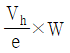
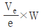
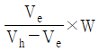
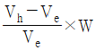
(정답률: 알수없음)
36. 배전선로의 역률 개선에 따른 효과로 적합하지 않은 것은?
- 선로의 전력손실 경감
- 선로의 전압강하의 감소
- 전원측 설비의 이용률 향상
- 선로 절연의 비용 절감
(정답률: 알수없음)
37. 송전단 전압 161kV, 수전단 전압 154kV, 상차각 35°, 리액턴스 60Ω 일 때 선로 손실을 무시하면 전송전력(MW)은 약 얼마인가?
- 356
- 307
- 237
- 161
(정답률: 알수없음)
38. 송전선로에 매설지선을 설치하는 목적은?
- 철탑 기초의 강도를 보강하기 위하여
- 직격뇌로부터 송전선을 차폐보호하기 위하여
- 현수애자 1연의 전압 분담을 균일화하기 위하여
- 철탑으로부터 송전선로로의 역섬락을 방지하기 위하여
(정답률: 알수없음)
39. 1회선 송전선과 변압기의 조합에서 변압기의 여자 어드미턴스를 무시하였을 경우 송수전단의 관계를 나타내는 4단자 정수 C0는? (단, A0 = A + CZts, B0 = B + AZtr + DZts + CZtr Zts, D0 = D + CZtr 여기서, Zts 는 송전단변압기의 임피던스이며, Ztr 은 수전단변압기의 임피던스이다.)
- C
- C + DZts
- C + AZts
- CD + CA
(정답률: 알수없음)
40. 단락 보호방식에 관한 설명으로 틀린 것은?
- 방사상 선로의 단락 보호방식에서 전원이 양단에 있을 경우 방향 단락 계전기와 과전류 계전기를 조합시켜서 사용한다.
- 전원이 1단에만 있는 방사상 송전선로에서의 고장 전류는 모두 발전소로부터 방사상으로 흘러나간다.
- 환상 선로의 단락 보호방식에서 전원이 두 군데 이상 있는 경우에는 방향 거리 계전기를 사용한다.
- 환상 선로의 단락 보호방식에서 전원이 1단에만 있을 경우 선택 단락 계전기를 사용한다.
(정답률: 알수없음)
3과목: 전기기기
41. 380V, 60Hz, 4극, 10kW인 3상 유도전동기의 전부하 슬립이 4%이다. 전원 전압을 10% 낮추는 경우 전부하 슬립은 약 몇 % 인가?
- 3.3
- 3.6
- 4.4
- 4.9
(정답률: 알수없음)
42. 3상 권선형 유도전동기의 기동 시 2차측 저항을 2배로 하면 최대토크 값은 어떻게 되는가?
- 3배로 된다.
- 2배로 된다.
- 1/2로 된다.
- 변하지 않는다.
(정답률: 알수없음)
43. 일반적인 3상 유도전동기에 대한 설명으로 틀린 것은?
- 불평형 전압으로 운전하는 경우 전류는 증가하나 토크는 감소한다.
- 원선도 작성을 위해서는 무부하시험, 구속시험, 1차 권선저항 측정을 하여야 한다.
- 농형은 권선형에 비해 구조가 견고하며, 권선형에 비해 대형전동기로 널리 사용된다.
- 권선형 회전자의 3선 중 1선이 단선되면 동기속도의 50%에서 더 이상 가속되지 못하는 현상을 게르게스현상이라 한다.
(정답률: 알수없음)
44. 슬립 st에서 최대 토크를 발생하는 3상 유도전동기에 2차측 한상의 저항을 r2라 하면 최대 토크로 기동하기 위한 2차측 한 상에 외부로부터 가해 주어야 할 저항(Ω)은?
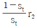
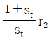
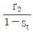
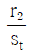
(정답률: 알수없음)
45. 직류기의 다중 중권 권선법에서 전기자 병렬회로 수 a와 극수 P 사이의 관계로 옳은 것은? (단, m은 다중도이다.)
- a = 2
- a = 2m
- a = P
- a = mP
(정답률: 알수없음)
46. 단상 직권 정류자 전동기의 전기자 권선과 계자 권선에 대한 설명으로 틀린 것은?
- 계자 권선의 권수를 적게 한다.
- 전기자 권선의 권수를 크게 한다.
- 변압기 기전력을 적게 하여 역률 저하를 방지한다.
- 브러시로 단락되는 코일 중의 단락전류를 크게 한다.
(정답률: 알수없음)
47. 3상 전원전압 220V를 3상 반파정류회로의 각 상에 SCR을 사용하여 정류제어 할 때 위상각을 60°로 하면 순 저항부하에서 얻을 수 있는 출력전압 평균값은 약 몇 V 인가?(문제 오류로 가답안 발표시 2번으로 발표되었지만 확정답안 발표시 모두 정답처리 되었습니다. 여기서는 가답안인 2번을 누르면 정답 처리 됩니다.)
- 128.65
- 148.55
- 257.3
- 297.1
(정답률: 알수없음)
48. 권수비가 a인 단상변압기 3대가 있다. 이것을 1차에 △, 2차에 Y로 결선하여 3상 교류 평형회로에 접속할 때 2차측의 단자전압을 V(V), 전류를 I(A)라고 하면 1차측의 단자전압 및 선전류는 얼마인가? (단, 변압기의 저항, 누설리액턴스, 여자전류는 무시한다.)
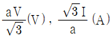
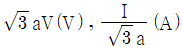
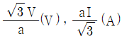
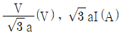
(정답률: 알수없음)
49. 직류 분권전동기에서 정출력 가변속도의 용도에 적합한 속도제어법은?
- 계자제어
- 저항제어
- 전압제어
- 극수제어
(정답률: 알수없음)
50. 전부하시의 단자전압이 무부하시의 단자전압보다 높은 직류발전기는?
- 분권발전기
- 평복권발전기
- 과복권발전기
- 차동복권발전기
(정답률: 알수없음)
51. 3상 동기발전기의 여자전류 10A에 대한 단자전압이 1000√3 V, 3상 단락전류가 50A 인 경우 동기임피던스는 몇 Ω 인가?
- 5
- 11
- 20
- 34
(정답률: 알수없음)
52. 단상 변압기를 병렬 운전할 경우 부하전류의 분담은?
- 용량에 비례하고 누설 임피던스에 비례
- 용량에 비례하고 누설 임피던스에 반비례
- 용량에 반비례하고 누설 리액턴스에 비례
- 용량에 반비례하고 누설 리액턴스의 제곱에 비례
(정답률: 알수없음)
53. 동기발전기에서 무부하 정격전압일 때의 여자전류를 Ifo, 정격부하 정격전압일 때의 여자전류를 If1, 3상 단락 정격전류에 대한 여자전류를 Ifs라 하면 정격속도에서의 단락비 K는?
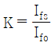
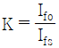
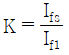
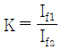
(정답률: 알수없음)
54. 변압기의 습기를 제거하여 절연을 향상시키는 건조법이 아닌 것은?
- 열풍법
- 단락법
- 진공법
- 건식법
(정답률: 알수없음)
55. 직류 분권전동기의 전기자전류가 10A일 때 5Nㆍm의 토크가 발생하였다. 이 전동기의 계자의 자속이 80%로 감소되고, 전기자전류가 12A로 되면 토크는 약 Nㆍm 인가?
- 3.9
- 4.3
- 4.8
- 5.2
(정답률: 알수없음)
56. 유도자형 동기발전기의 설명으로 옳은 것은?
- 전기자만 고정되어 있다.
- 계자극만 고정되어 있다.
- 회전자가 없는 특수 발전기이다.
- 계자극과 전기자가 고정되어 있다.
(정답률: 알수없음)
57. 스텝 모터(step motor)의 장점으로 틀린 것은?
- 회전각과 속도는 펄스 수에 비례한다.
- 위치제어를 할 때 각도 오차가 적고 누적된다.
- 가속, 감속이 용이하며 정ㆍ역전 및 변속이 쉽다.
- 피드백 없이 오픈 루프로 손쉽게 속도 및 위치제어를 할 수 있다.
(정답률: 알수없음)
58. 단상 변압기의 무부하 상태에서 V1 = 200sin(ωt+30°)(V) 의 전압이 인가되었을 때 Io = 3sin(ωt+60°) + 0.7sin(3ωt+180°)(A) 의 전류가 흘렀다. 이때 무부하손은 약 몇 W 인가?
- 150
- 259.8
- 415.2
- 512
(정답률: 알수없음)
59. 극수 20, 주파수 60Hz인 3상 동기발전기의 전기자권선이 2층 중권, 전기자 전 슬롯 수 180, 각 슬롯 내의 도체 수 10, 코일피치 7슬롯인 2중 성형결선으로 되어 있다. 선간전압 3300V를 유도하는데 필요한 기본파 유효자속은 약 몇 Wb인가? (단, 코일피치와 자극피치의 비 β = 7/9 이다)
- 0.004
- 0.062
- 0.⑤3
- 0.07
(정답률: 알수없음)
60. 2방향성 3단자 사이리스터는 어느 것인가?
- SCR
- SSS
- SCS
- TRIAC
(정답률: 알수없음)
4과목: 회로이론 및 제어공학
61. 상의 순서가 a-b-c인 불평형 3상 교류회로에서 각 상의 전류가 Ia = 7.28∠15.95°(A), Ib = 12.81∠-128.66°(A), Ic = 7.21∠123.69°(A) 일 때 역상분 전류는 약 몇 A 인가?
- 8.95∠-1.14°
- 8.95∠1.14°
- 2.51∠-96.55°
- 2.51∠96.55°
(정답률: 알수없음)
62. 그림과 같은 T형 4단자 회로의 임피던스 파라미터 Z22는?
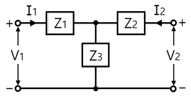
- Z3
- Z1 + Z2
- Z1 + Z3
- Z2 + Z3
(정답률: 알수없음)
63.  는?
는?
- δ(t)+e-t(cos2t-sin2t)
- δ(t)+e-t(cos2t+2sin2t)
- δ(t)+e-t(cos2t-2sin2t)
- δ(t)+e-t(cos2t+sin2t)
(정답률: 알수없음)
64. RL 직렬회로에서 시정수가 0.03s, 저항이 14.7Ω일 때 이 회로의 인덕턴스(mH)는?
- 441
- 362
- 17.6
- 2.53
(정답률: 알수없음)
65. 그림과 같은 부하에 선간전압이 Vab = 100∠30°(V)인 평형 3상 전압을 가했을 때 선전류 Ia(A)는?
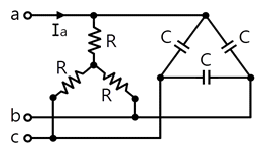
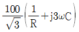
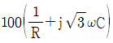
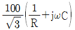
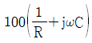
(정답률: 알수없음)
66. 회로에서 6Ω에 호르는 전류(A)는?
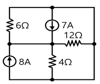
- 2.5
- 5
- 7.5
- 10
(정답률: 알수없음)
67. 그림 (a)의 Y결선 회로를 그림 (b)의 △결선회로로 등가 변환했을 때 Rab, Rbc, Rca는 각각 몇 Ω 인가? (단, Ra = 2Ω, Rb = 3Ω, Rc = 4Ω)
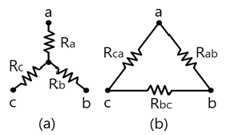
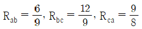
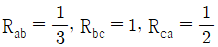
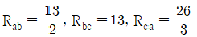
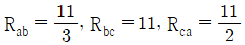
(정답률: 알수없음)
68. 분포정수로 표현된 선로의 단위 길이당 저항이 0.5Ω/km, 인덕턴스가 1μH/km, 커패시스턴스가 6μF/km일 때 일그러짐이 없는 조건(무왜형 조건)을 만족하기 위한 단위 길이당 컨덕턴스(℧/m)는?(문제 오류로 가답안 발표시 3번으로 발표되었지만 확정답안 발표시 모두 정답처리 되었습니다. 여기서는 가답안인 3번을 누르면 정답 처리 됩니다.)
- 1
- 2
- 3
- 4
(정답률: 알수없음)
69. 회로에서
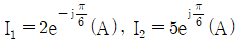
, I3= 5.0(A), Z3 = 1.0Ω 일 때 부하(Z1, Z2, Z3) 전체에 대한 복소 전력은 약 몇 VA 인가?
- 55.3 - j7.5
- 55.3 + j7.5
- 45 - j26
- 45 + j26
(정답률: 알수없음)
70. 다음과 같은 비정현파 교류 전압 v(t)와 전류 i(t)에 의한 평균전력은 약 몇 W 인가?
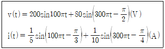
- 6.414
- 8.586
- 12.828
- 24.212
(정답률: 알수없음)
71. 다음의 논리식과 등가인 것은?
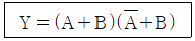
- Y = A
- Y = B
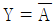
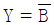
(정답률: 알수없음)
72. 기본 제어요소인 비례요소의 전달함수는? (단, K는 상수이다.)
- G(s) = K
- G(s) = Ks
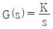
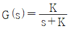
(정답률: 알수없음)
73.
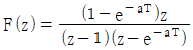
의 역 z 변환은?- t·e-at
- at·e-at
- 1+e-at
- 1-e-at
(정답률: 알수없음)
74. 다음의 상태방정식으로 표현되는 시스템의 상태천이행렬은?
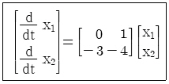


(정답률: 알수없음)
75. 다음 블록선도의 전달함수
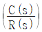
는?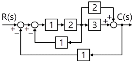
- 10/9
- 10/13
- 12/9
- 12/13
(정답률: 알수없음)
76. 제어시스템의 전달함수가
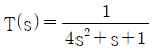
과 같이 표현될 때 이 시스템의 고유주파수(ωn(rad/s))와 감쇠율(ζ)은?- ωn=0.25, ζ=1.0
- ωn=0.5, ζ=0.25
- ωn=0.5, ζ=0.5
- ωn=1.0, ζ=0.5
(정답률: 알수없음)
77. 다음의 개루프 전달함수에 대한 근궤적이 실수축에서 이탈하게 되는 분리점은 약 얼마인가?
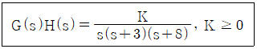
- -0.93
- -5.74
- -6.0
- -1.33
(정답률: 알수없음)
78. 전달함수가
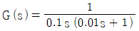
과 같은 제어시스템에서 ω = 0.1 rad/s 일 때의 이득(dB)과 위상각(°)은 약 얼마인가?- 40dB, -90°
- -40dB, 90°
- 40dB, -180°
- -40dB, -180
(정답률: 알수없음)
79. 그림의 신호흐름도를 미분방정식으로 표현한 것으로 옳은 것은? (단, 모든 초기 값은 0이다.)
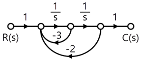
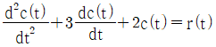
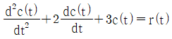
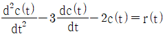
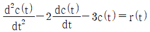
(정답률: 알수없음)
80. 제어시스템의 특성방정식이 s4+s3-3s2-s+2=0 와 같을 때, 이 특성방정식에서 s 평면의 오른쪽에 위치하는 근은 몇 개인가?
- 0
- 1
- 2
- 3
(정답률: 알수없음)
5과목: 전기설비기술기준 및 판단기준
81. 최대 사용전압이 10.5kV를 초과하는 교류의 회전기 절연내력을 시험하고자 한다. 이때 시험전압은 최대사용전압의 몇 배의 전압으로 하여야 하는가? (단, 회전변류기는 제외한다.)
- 1
- 1.1
- 1.25
- 1.5
(정답률: 알수없음)
82. 강관으로 구성된 철탑의 갑종 풍압하중은 수직 투영면적 1m2에 대한 풍압을 기초로 하여 계산한 값이 몇 Pa 인가? (단, 단주는 제외한다.)
- 1255
- 1412
- 1627
- 2157
(정답률: 알수없음)
83. 가요전선관 및 부속품의 시설에 대한 내용이다. 다음 ( )에 들어갈 내용으로 옳은 것은?
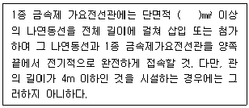
- 0.75
- 1.5
- 2.5
- 4
(정답률: 알수없음)
84. 전압의 구분에 대한 설명으로 옳은 것은?
- 직류에서의 저압은 1000V 이하의 전압을 말한다.
- 교류에서의 저압은 1500V 이하의 전압을 말한다.
- 직류에서의 고압은 3500V를 초과하고 7000V 이하인 전압을 말한다.
- 특고압은 7000V를 초과하는 전압을 말한다.
(정답률: 알수없음)
85. 한국전기설비규정에 따른 용어의 정의에서 감전에 대한 보호 등 안전을 위해 제공되는 도체를 말하는 것은?
- 접지도체
- 보호도체
- 수평도체
- 접지극도체
(정답률: 알수없음)
86. 사용전압이 22.9kV인 가공전선이 철도를 횡단하는 경우, 전선의 레일면상의 높이는 몇 m 이상인가?
- 5
- 5.5
- 6
- 6.5
(정답률: 알수없음)
87. 사용전압이 154kV인 전선로를 제1종 특고압 보안공사로 시설할 경우, 여기에 사용되는 경동연선의 단면적은 몇 mm2 이상이어야 하는가?
- 100
- 125
- 150
- 200
(정답률: 알수없음)
88. 전력보안통신설비의 조가선은 단면적 몇 mm2 이상의 아연도강연선을 사용하여야 하는가?
- 16
- 38
- 50
- 55
(정답률: 알수없음)
89. 통신상의 유도 장해방지 시설에 대한 설명이다. 다음 ( )에 들어갈 내용으로 옳은 것은?
- 정전작용
- 유도작용
- 가열작용
- 산화작용
(정답률: 알수없음)
90. 풍력터빈의 피뢰설비 시설기준에 대한 설명으로 틀린 것은?
- 풍력터빈에 설치한 피뢰설비(리셉터, 인하도선 등)의 기능저하로 인해 다른 기능에 영향을 미치지 않을 것
- 풍력터빈 내부의 계측 센서용 케이블은 금속관 또는 차폐케이블 등을 사용하여 뇌유도과전압으로부터 보호할 것
- 풍력터빈에 설치하는 인하도선은 쉽게 부식되지 않는 금속선으로서 뇌격전류를 안전하게 흘릴 수 있는 충분한 굵기여야 하며, 가능한 직선으로 시설할 것
- 수뢰부를 풍력터빈 중앙부분에 배치하되 뇌격전류에 의한 발열에 용손(溶損)되지 않도록 재질, 크기, 두께 및 형상 등을 고려할 것
(정답률: 알수없음)
91. 주택의 전기저장장치의 축전지에 접속하는 부하 측 옥내배선을 사람이 접촉할 우려가 없도록 케이블배선에 의하여 시설하고 전선에 적당한 방호장치를 시설한 경우 주택의 옥내전로의 대지전압은 직류 몇 V 까지 적용할 수 있는가? (단, 전로에 지락이 생겼을 때 자동적으로 전로를 차단하는 장치를 시설한 경우이다.)
- 150
- 300
- 400
- 600
(정답률: 알수없음)
92. 과전류차단기로 저압전로에 사용하는 범용의 퓨즈(「전기용품 및 생활용품 안전관리법」에서 규정하는 것을 제외한다)의 정격전류가 16A인 경우 용단전류는 정격전류의 몇 배인가? (단, 퓨즈(gG)인 경우이다.)
- 1.25
- 1.5
- 1.6
- 1.9
(정답률: 알수없음)
93. 특고압용 변압기의 내부에 고장이 생겼을 경우에 자동차단장치 또는 경보장치를 하여야 하는 최소 뱅크용량은 몇 kVA 인가?
- 1000
- 3000
- 5000
- 10000
(정답률: 알수없음)
94. 고압 가공전선로의 가공지선으로 나경동선을 사용할 때의 최소 굵기는 지름 몇 mm 이상인가?
- 3.2
- 3.5
- 4.0
- 5.0
(정답률: 알수없음)
95. 합성수지관 및 부속품의 시설에 대한 설명으로 틀린 것은?
- 관의 지지점 간의 거리는 1.5m 이하로 할 것
- 합성수지제 가요전선관 상호 간은 직접 접속할 것
- 접착제를 사용하여 관 상호 간을 삽입하는 깊이는 관의 바깥지름의 0.8배 이상으로 할 것
- 접착제를 사용하지 않고 관 상호 간을 삽입하는 깊이는 관의 바깥지름의 1.2배 이상으로 할 것
(정답률: 알수없음)
96. 지중전선로는 기설 지중약전류전선로에 대하여 통신상의 장해를 주지 않도록 기설약전류전선로로부터 충분히 이격시키거나 기타 적당한 방법으로 시설하여야 한다. 이때 통신상의 장해가 발생하는 원인으로 옳은 것은?
- 충전전류 또는 표피작용
- 충전전류 또는 유도작용
- 누설전류 또는 표피작용
- 누설전류 또는 유도작용
(정답률: 알수없음)
97. 샤워시설이 있는 욕실 등 인체가 물에 젖어있는 상태에서 전기를 사용하는 장소에 콘센트를 시설할 경우 인체감전보호용 누전차단기의 정격감도전류는 몇 mA 이하인가?
- 5
- 10
- 15
- 30
(정답률: 알수없음)
98. 가공전선로의 지지물에 시설하는 통신선 또는 이에 직접 접속하는 가공 통신선이 철도 또는 궤도를 횡단하는 경우 그 높이는 레일면상 몇 m 이상으로 하여야 하는가?
- 3
- 3.5
- 5
- 6.5
(정답률: 알수없음)
99. 사용전압이 400V 이하인 저압 옥측전선로를 애자공사에 의해 시설하는 경우 전선 상호 간의 간격은 몇 m 이상이어야 하는가? (단, 비나 이슬에 젖지 않는 장소에 사람이 쉽게 접촉될 우려가 없도록 시설한 경우이다.)
- 0.025
- 0.045
- 0.06
- 0.12
(정답률: 알수없음)
100. 폭연성 분진 또는 화약류의 분말에 전기설비가 발화원이 되어 폭발할 우려가 있는 곳에 시설하는 저압 옥내배선의 공사방법으로 옳은 것은? (단, 사용전압이 400V 초과인 방전등을 제외한 경우이다.)
- 금속관공사
- 애자사용공사
- 합성수지관공사
- 캡타이어 케이블공사
(정답률: 알수없음)